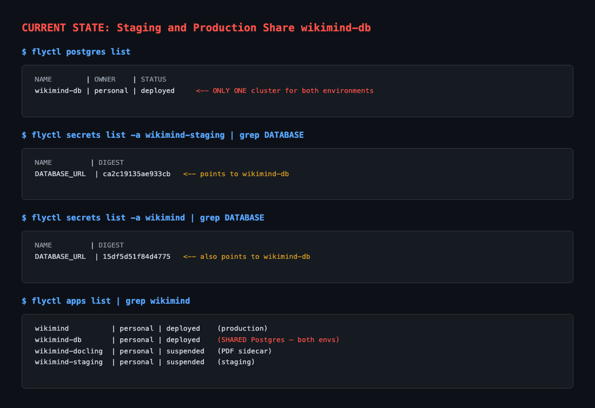
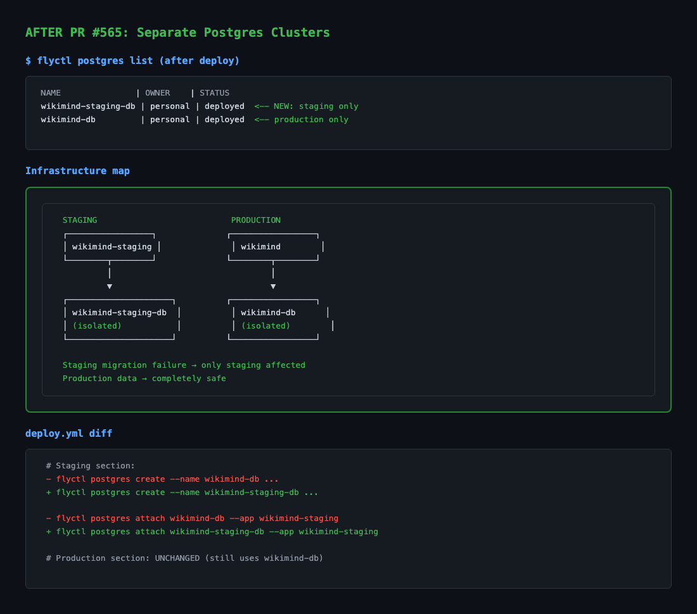

wikimind-staging-db). Production keeps wikimind-db. Staging migrations can no longer corrupt production.
# PROBLEM: Only ONE Postgres cluster (wikimind-db) for both environments
# flyctl postgres list shows a single cluster
# Both DATABASE_URL secrets point to the same cluster
# Risk: staging runs alembic downgrade → production tables destroyed

- # wikimind-db | (Postgres cluster) | Shared database + # wikimind-staging-db | (Postgres cluster) | Staging database + # wikimind-db | (Postgres cluster) | Production database - if ! flyctl status --app wikimind-db 2>/dev/null; then - flyctl postgres create --name wikimind-db ... + if ! flyctl status --app wikimind-staging-db 2>/dev/null; then + flyctl postgres create --name wikimind-staging-db ... - flyctl postgres attach wikimind-db --app wikimind-staging + flyctl postgres attach wikimind-staging-db --app wikimind-staging
| Scenario | Before (shared DB) | After (separate DBs) |
|---|---|---|
| Staging migration has a bug | Corrupts production tables | Only staging affected |
| Testing destructive migration (drop table) | Drops production table | Safe — staging DB only |
| Staging test data (smoke test articles) | Visible in production | Isolated to staging |
| alembic downgrade in staging | Reverts production schema | Production untouched |
https://wikimind.fly.dev/docsblockedThis PR changes deployment topology rather than the product UI, so the deployed docs page was used only as a discovery probe. The automation wrote ui-discovery.json, but Chromium could not launch from this sandbox and no fresh screenshot was produced.
Playwright Chromium launch failed: bootstrap_check_in ... Permission denied (1100)